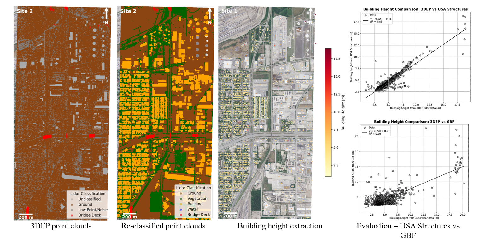
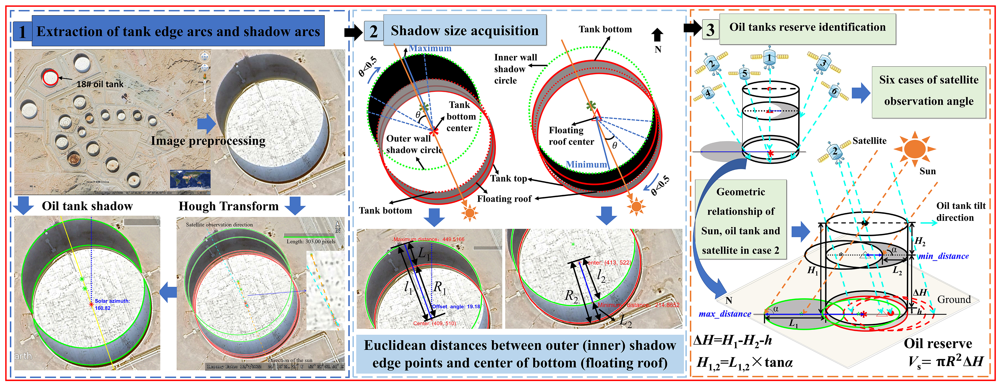
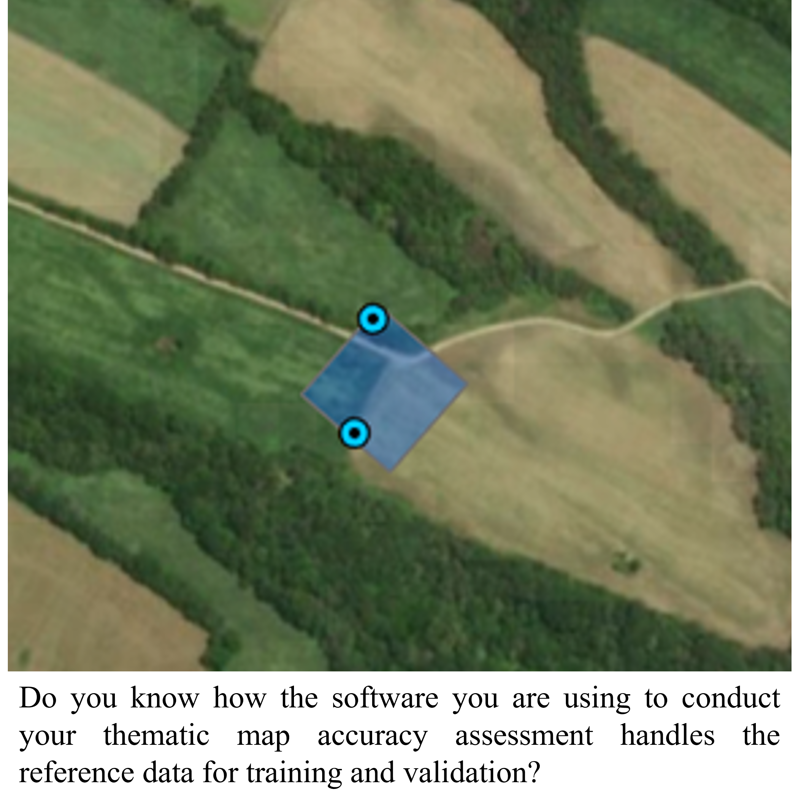
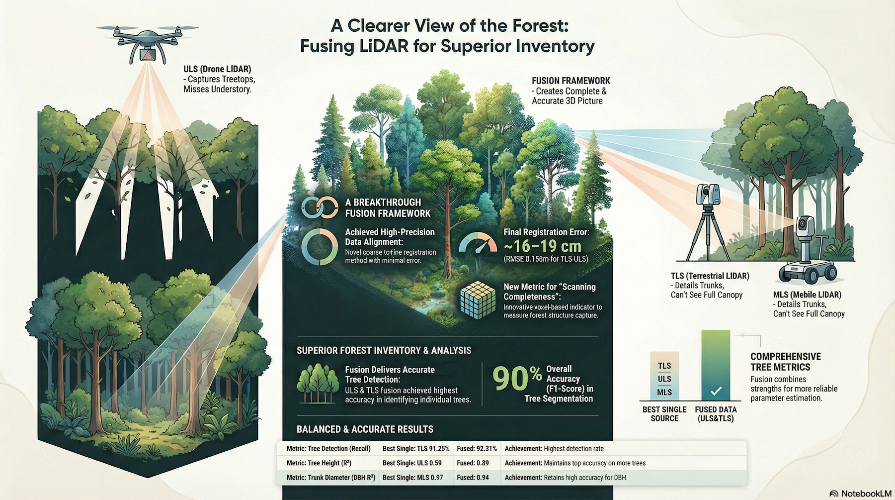
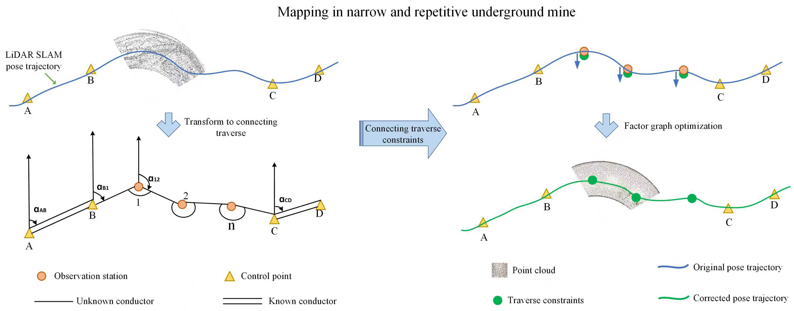
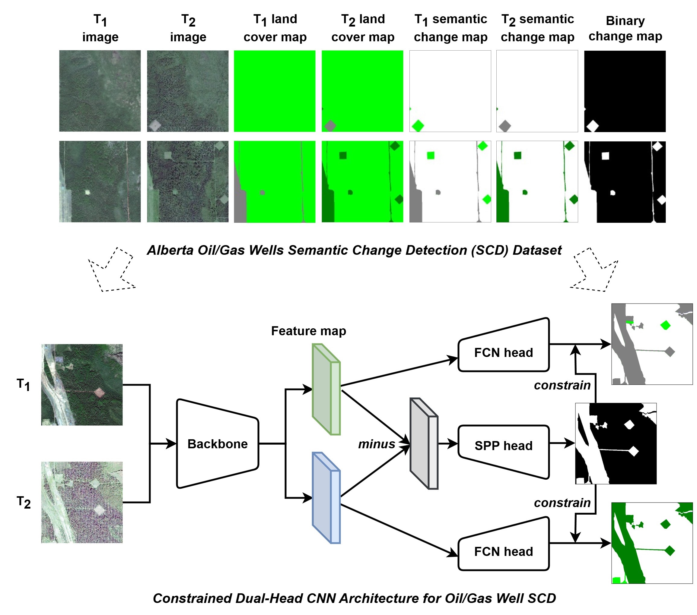

Research Articles Open Access
Pages: pp. 593-601
Authors: Liu, Jung-kuan; Shavers, Ethan; Arundel, Samantha T.; Qin, Rongjun;
Abstract:
Read more...
Accurate building height information is used for numerous urban applications, including infrastructure modeling, disaster risk assessment, and energy demand estimation. The U.S. Geological Survey collects airborne lidar data to support the three-dimensional elevation program (3DEP). The high point density and vertical accuracy of the lidar point clouds are optimal for 3D mapping. Few studies have systematically evaluated building height extraction from 3DEP lidar point clouds in urban areas. This study assesses the accuracy and consistency of building height estimates from two publicly available data sets by comparing them to the 3DEP lidar data. The public building height data sets are USA Structures and Microsoft Global Building Footprints (GBF), and they are evaluated across two contrasting urban sites. Building heights from USA Structures are also lidar-derived, whereas GBF estimates are based on stereo matching of optical imagery. Building heights from 3DEP were extracted by classifying lidar points using a deep learning model, isolating roof and ground returns, and computing the height as the median elevation difference between the roof and surrounding ground points. For both sites, 3DEP lidar-derived heights show strong agreement with USA Structures (R² = 0.87 and 0.86; MAE = 1.8 and 2.2 m), confirming the internal consistency and reliability of lidar-derived measurements. In contrast, comparisons with GBF height estimates reveal significantly lower correlations (R² = 0.54 and 0.60; MAE = 2.5 and 3.1 m), highlighting the limitations of imagery-based height reconstruction, particularly in dense or heterogeneous urban environments. These findings indicate that lidar can be used as an accurate source for vertical structure characterization and underscore the benefits of improved integration and bias correction when using imagery-derived building heights. The results provide support for hybrid approaches that combine the broad spatial coverage of optical data sets with the accuracy of lidar for scalable 3D urban mapping.

Pages: pp. 603-611
Authors: Li, Yang; Yang, Jin-Rong; Liu, Ke-Hang; Chen, Hong-Wei;
Abstract:
Read more...
The reserve volume of oil tanks can be obtained through in-depth analysis of satellite images. This approach addresses the urgent demand for precise and rapid acquisition of global oil tank reserves. A novel method for extracting oil tank shadows based on projection characteristics of a cylinder was proposed that extracts the shadows obscured by the oil tank’s side wall under complex observation angles. A preprocessed satellite image was used to extract the oil tank shadow via arc feature extraction, Hough transform, and an edge detection algorithm. Subsequently, a reserve identification model for oil tanks based on geometric projection and shadow boundary extraction was constructed. This model used the parallel projection characteristics of satellite imaging and combined the geometric structure of the oil tank to infer the shadow length by the geometric relationship between the extreme points of the shadow boundary and the tank centers. The oil tank height was then accurately determined, and finally, the reserve was identified using height difference and tank radius. The proposed method was validated through the establishment of a tank experimental system and the application of an oil tank case study from the United Arab Emirates. The research results show that the method exhibited high accuracy and reliability. Through multiple sets of tank experiments, the proposed method yielded a relative error range of 0.49% to 2.14% in identifying the reserve of the tank model. To further verify its accuracy, the method was applied to the 18# oil tank at Jebel Dhanna Port, yielding a relative error of 0.44% in volume identification.

Research Articles Open Access
Pages: pp. 603-619
Authors: Fraser, Benjamin T.; Congalton, Russell G.;
Abstract:
Read more...
Leading geographic information system (GIS) applications offer producers streamlined tools for conducting digital image classifications and subsequent thematic map accuracy assessments. Such tools are used daily by countless practitioners for critical analyses of land use and cover and other thematic maps due to their ease of implementation and increasingly available remotely sensed imagery. Despite a robust history of discussion and research surrounding the sources of error that could be introduced during such practices, as well as the careful considerations one should undertake when carrying out such methods, many analyses are still performed using invalid or inappropriate methodologies. These issues largely stem from the GIS software applications considering the reference data as points (x, y coordinates) and not as imagery (pixels). In this paper, three key characteristics and their issues in how reference data are handled by leading GIS applications are addressed. These characteristics include first the sample unit (i.e., geometry), in which the trade-offs and limitations of individual reference data sample geometry types are documented. Second is the reference data sample size, which focuses on how default software settings could lead to improper subsampling (i.e., counting/creating multiple samples from a single producer-defined reference data site). Third is the sampling distribution, which relates to the controlled distribution of individual training and validation samples within and among the given strata (map classes). The concluding section provides several recommendations to future producers (practitioners) based on a confluence of evidence gathered while testing these specific characteristics using leading GIS applications.

Research Articles Open Access
Pages: pp. 621-635
Authors: Malek, Salim; Farella, Elisa Mariarosaria; Perda, Giulio; Cantoro, Gianluca; Remondino, Fabio;
Abstract:
Read more...
National archives worldwide have recently dedicated significant efforts to preserve fragile historical collections (e.g., maps, documents, photographs) through scanning and digitization. Advancements in digital technologies have opened new opportunities for processing and accessing these materials; however, as these collections grow, significant challenges arise in efficiently managing, linking, and using vast volumes of digital data. This paper addresses the challenge imposed by the digital transformation of vast archive collections, with a focus on scanned materials preserved in historical photographic and mapping archives and intended for the creation of digital databases and online catalogues. This study targets the semi-automatic vectorization of aerial photo indexes (APIs), often referred to as finding aids for aerial reconnaissance sorties (i.e., maps on which aerial photo footprints [each corresponding to a historical aerial photo] from different surveying flight missions were manually drawn onto base topographic maps). Aerial images were captured during the 20th century for military, reconnaissance, and mapping purposes, and their footprints were then manually transposed onto reference maps. Currently, archives and mapping institutions managing creating digital databases and catalogues are manually addressing a demanding and time-consuming vectorization task, and automated solutions are highly needed. This contribution proposes a novel and comprehensive semi-automatic vectorization pipeline that leverages and integrates computer vision techniques and uses deep learning and computational geometry for detecting, isolating, and polygonizing aerial image footprints in APIs. The methodology is applied to a large collection of APIs scanned by the Italian National Historical AirPhoto Archive at the Italian National Institute for Cataloguing and Documentation of the Ministry of Culture and will be added to the online database and WebGIS catalogue recently set up to disseminate copies of historical aerial photographs.

Pages: pp. 637-645
Authors: Xu, Zhihua; Li, Yuanyuan; Xu, Ershuai; Wu, Jing; Lin, Jiaxuan; Zhang, Yuansheng; Yang, Bisheng; Peng, Suping;
Abstract:
Read more...
Underground 3D mapping plays a vital role in mineral resource exploration and development. Lidar-based simultaneous localization and mapping (SLAM) has become a key technology in this domain, offering autonomous navigation and real-time mapping capabilities. However, in narrow and geometrically repetitive underground mine corridors—characterized by long passages and a lack of loop closures—conventional lidar-SLAM systems suffer from significant error accumulation, leading to degraded mapping accuracy. To overcome these limitations, we propose a novel lidar-SLAM method incorporating connecting traverse constraints. First, edge and planar features are extracted from lidar scans via a segmentation strategy and refined using least-squares fitting. These features are then integrated into a factor graph framework to optimize pose estimation and construct a consistent point cloud map. Furthermore, we introduce an external traverse connection mechanism to impose additional constraints in the pose graph, effectively correcting trajectory drift and 3D point coordinates. Our approach mitigates the effect of noise and error accumulation commonly encountered in traditional lidar-SLAM techniques. Evaluation on a self-collected data set and two public benchmarks demonstrates that the proposed method consistently outperforms four state-of-the-art systems: LOAM, LeGO-LOAM, S-LOAM, and F-LOAM. In our self-collected data set, the trajectory root mean square error (RMSE) values for LOAM, LeGO-LOAM, S-LOAM, F-LOAM, and the proposed method are 0.693, 0.506, 4.062, 2.542, and 0.467 m, respectively. Compared to these baseline methods, our approach achieves error reductions of 32.6%, 7.7%, 88.5%, and 81.6%, respectively. On the two public data sets, the trajectory RMSE values for the same methods are 1.132, 0.351, 5.848, 8.850, and 0.084 m and 0.612, 0.590, 3.671, 9.279, and 0.558 m. This corresponds to relative error reductions of 88.6%, 67.2%, 97.5%, and 98.5% and of 8.8%, 5.4%, 84.8%, and 94.0%, respectively, confirming its robustness and accuracy in challenging underground environments.

Research Articles Open Access
Pages: pp. 647-658
Authors: Xu, Hongzhang; He, Hongjie; Zhang, Ying; Zhang, Dedong; Li, Jonathan;
Abstract:
Read more...
High-resolution mapping of land disturbance and reclamation is important for assessing the cumulative environmental effects of oil/gas production. The growing availability of high-resolution satellite imagery, combined with recent advances in deep learning, offers a desirable solution for detecting land surface changes on disturbed land. In this study, we constructed the Alberta oil/gas wells semantic change detection (SCD) data set in Alberta, Canada, based on high-resolution satellite imagery from WorldView-2 and SPOT-6. The data set consists of 328 pairs of bitemporal images (512 × 512 pixels at 1.5-m resolution), along with corresponding semantic change maps, binary change maps, and land cover maps. In addition, we proposed a constrained dual-head convolutional neural network (CNN) framework that jointly learns semantic change and binary change tasks. Specifically, two segmentation heads are designed—one for semantic changes and one for binary changes—and are explicitly connected through a cosine similarity loss that enforces consistency between the two tasks. Taking High-Resolution Net (HRNet)-v2 as the backbone, our model was pretrained on the large-scale SEmantic Change detectiON Data Set (SECOND) and fine-tuned on our developed data set. Comparative experiments with BiSRNet, HGINet, and SCanNet demonstrate that our approach achieves superior performance, with the highest mean intersection over union (mIoU) (79.47%) and separated Kappa (SeK) (28.40%) after fine-tuning. Incorporating land cover maps as additional supervision further boosts results, with our approach reaching an mIoU of 80.05% and a SeK of 29.71%. These findings highlight the effectiveness of the proposed constrained dual-head CNN architecture and the benefit of leveraging land cover information for advancing SCD in remote sensing.
